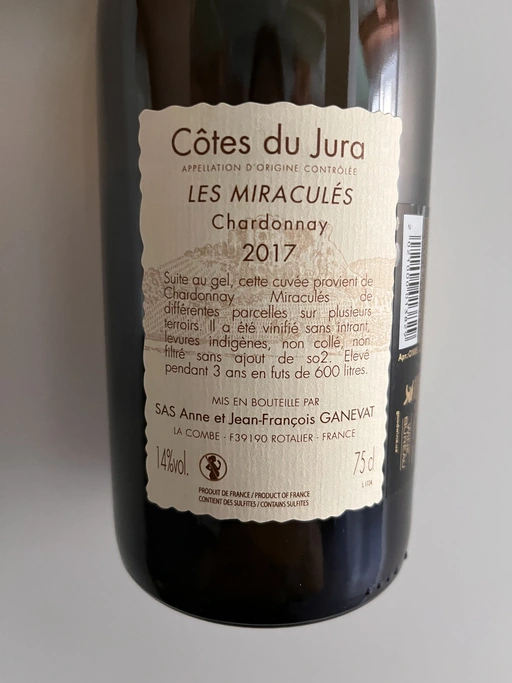

- Type
- White Still, Dry
- Producer
- Anne et J.F. Ganevat
- Vintage
- 2017
- Location
- France, Arbois AOC
- Grapes
- Chardonnay
- Alcohol
- 14
- Sugar
- 1
- Price
- 1813 UAH
- Cellar
- N/A
Ratings
2022-08-16 - 8.50
Hey, it’s a baked apple with honey and nuts. Someone decided to add some salt and yeasty cheese. And I have no objections! Because it makes sense to combine it all. It has a volume of a man with a big belly. It hardly fits in the biggest glass. And it’s a miracle that it does! Ripe, delicious and sophisticated Chardonnay. The bottle is empty, but the salty aftertaste sticks for a long time.
Related